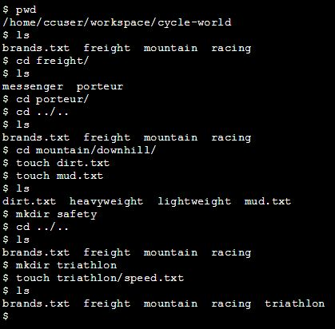

Directions
We have learned a number of commands to navigate files and directories from the command line. In this project, you'll use the commands you learned to navigate through the records of Cycle World, a bicycle shop in your neighborhood.
Tasks
16/16 Complete
Mark the tasks as complete by checking them off
1. Print the working directory.
2. List the files and directories in the working directory.
3. Change directories to the freight/ directory.
4. List the files and directories in the working directory
5. Change directories to the porteur/ directory.
6. Change directories up two levels to the cycle-world/ directory. List the files and directories in the cycle-world/ directory.
7. Change directories to the mountain/downhill/ directory.
8. Make a file called dirt.txt
9. Make a file called mud.txt
10. List the files and directories in the downhill/ directory.
11. In the downhill/ directory, make a directory called safety/.
12. Change directories to the cycle-world/ directory.
13. List the contents of the cycle-world/ directory.
14. In cycle-world/, make a directory called triathalon/.
15. Without changing directories from cycle-world/, make a file in the triathalon/ directory called speed.txt.
16. List all files and directories in the current directory.
Answers
